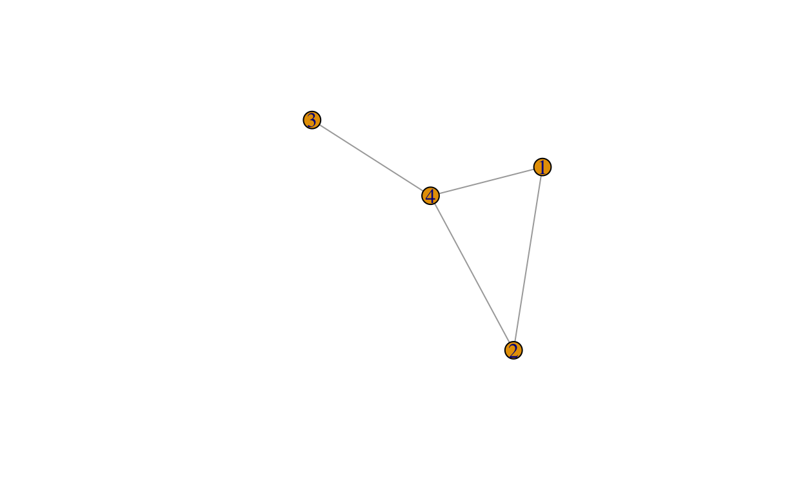
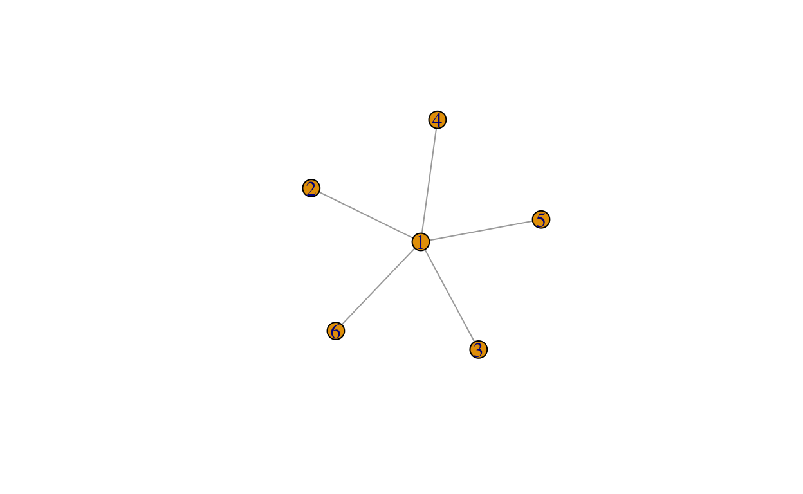
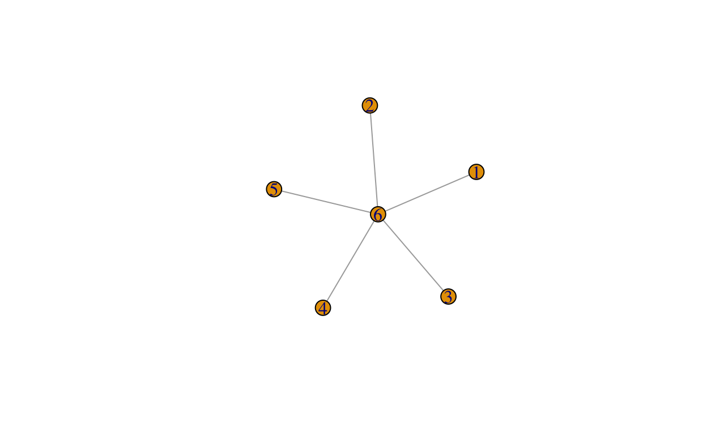

Come for the details, stay for the shitty Python, leave with disappointment. Not unlike the experience of dating me.
This is part two of an ongoing exercise in hubris. Part one is here.
So first things first: Cholesky wasn’t Russian. I don’t know why I always thought he was, but you know. Sometime you should do a little googling first. Cholesky was French and died in the First World War.
But now that’s out of the way, let’s talk about matrices. If \(A\)1 is a symmetric positive definite matrix, then there is a unique lower-triangular matrix \(L\) such that \(A = LL^T\).
Like all good theorems in numerical linear algebra, the proof of the existence of the Cholesky decomposition gives a pretty clear algorithm for constructing \(L\). To sketch2 it, let us see what it looks like if build up our Choleksy factorisation from left to right, so the first \(j-1\) columns have been modified and we are looking at how to build the \(j\)th column. In order to make \(L\) lower-triangular, we need the first \(j-1\) elements of the \(j\)th column to be zero. Let’s see if we can work out what the other columns have to be.
Writing this as a matrix equation, we get \[ \begin{pmatrix} A_{11} & a_{12} & A_{32}^T \\ a_{12}^T & a_{22} & a_{32}^T \\ A_{31} & a_{32} & A_{33}\end{pmatrix} = \begin{pmatrix} L_{11}&& \\ l_{12}^T & l_{22}&\\ L_{31} & l_{32} & L_{33}\end{pmatrix} \begin{pmatrix}L_{11}^T &l_{12} & L_{31}^T\\ & l_{22}&l_{32}^T\\ & & L_{33}^T\end{pmatrix}, \] where \(L_{11}\) is lower-triangular (and \(A_{11} = L_{11}L_{11}^T\)) and lower-case letters are vectors3 and everything is of the appropriate dimension to make \(A_{11}\) the top-left \((j-1) \times (j-1)\) submatrix of \(A\).
If we can find equations for \(l_{22}\) and \(l_{32}\) that don’t depend on \(L_{33}\) (ie we can express them in terms of things we already know), then we have found an algorithm that marches from the left of the matrix to the right leaving a Choleksy factorisation in its wake!
If we do our matrix multiplications, we get the following equation for \(a_{22} = A_{jj}\): \[ a_{22} = l_{12}^Tl_{12} + l_{22}^2. \] Rearranging, we get \[ l_{22} = \sqrt{a_{22} - l_{12}^Tl_{12}}. \] The canny amongst you will be asking “yes but is that a real number”. The answer turns out to be “yes” for all diagonals if and only if4 \(A\) is symmetric positive definite.
Ok! We have expressed \(l_{22}\) in terms of things we know, so we are half way there. Now to attack the vector \(l_{3,2}\). Looking at the (3,2) equation implied by the above block matrices, we get \[ a_{32} = L_{31}l_{12} + l_{32} l_{22}. \] Remembering that \(l_{22}\) is a scalar (that we have already computed!), we get \[ l_{32} = (a_{32} - L_{31}l_{12}) / l_{22}. \]
Success!
This then gives us the5 Cholesky factorisation6:
for j in range(0,n) (using python slicing notation because why notation)
L[j,j] = sqrt(A[j,j] - L[j, 1:(j-1)] * L[j, 1:(j-1)]')
L[(j+1):n, j] = (A[(j+1):n, j] - L[(j+1):n, 1:(j-1)] * L[j, 1:(j-1)]') / L[j,j]Easy as.
When \(A\) is a dense matrix, this costs \(\mathcal{O}(n^3)\) floating point operations7.
So how can we take advantage of the observation that most of the entries of \(A\) are zero (aka \(A\) is a sparse matrix)? Well. That is the topic of this post. In order, we are going to look at the following:
If we look at the Cholesky algorithm, we notice that we are scanning through the matrix column-by-column. When a computer stores a matrix, it stores it as a long 1D array with some side information. How this array is constructed from the matrix depends on the language.
There are (roughly) two options: column-major or row-major storage. Column major storage (used by Fortran8, R, Matlab, Julia, Eigen, etc) stacks a matrix column by column. A small example: \[ \begin{pmatrix}1&3&5\\2&4&6 \end{pmatrix} \Rightarrow [1,2,3,4,5,6]. \] Row-mjor ordering (C/C++ arrays, SAS, Pascal, numpy9) stores things row-by-row.
Which one do we use? Well. If you look at the Cholesky algorithm, it scans through the matrix column-by-column. It is much much much more memory efficient in this case to have the whole column available in one contiguous chunk of memory. So we are going to use column-major storage.
But there’s an extra wrinkle: Most of the entries in our matrix are zero. It would be very inefficient to store all of those zeros. You may be sceptical about this, but it’s true. It helps to realize that even in the examples at the bottom of this post that are not trying very hard to minimise the fill in, only 3-4% of the potential elements in \(L\) are non-zero.
It is far more efficient to just store the locations10 of the non-zeros and their values. If only 4% of your matrix is non-zero, you are saving11 a lot of memory!
The storage scheme we are inching towards is called compressed
sparse column (CSC) storage. This stores the matrix in three
arrays. The first array indices (which has as many entries
as there are non-zeros) stores the row numbers for each non-zero
element. So if \[
B = \begin{pmatrix}
1 &&5 \\
2&3& \\
&4&6
\end{pmatrix}
\] then (using zero-based indices because I’ve to to make this
work in Python)
B_indices = [0,1,1,2,0,3]The second array indptr is an \(n+1\)-dimensional array that indexes the
first element of each row. The final element of indptr is
nnz(B)12. This leads to
B_indptr = [0,2,4,6]This means that the entries in column13 j are have row numbers
B_indices[B_indptr[j]:B_indptr[j+1]]The third and final array is x, which stores the
values of the non-negative entries of \(A\) column-by-column. This
gives
B_x = [1,2,3,4,5,6]Using these three arrays we can get access to the jth
row of \(B\) by accessing
B_x[B_indptr[j]:B_indptr[j+1]]This storage scheme is very efficient for what we are about to do. But it is fundamentally a static scheme: it is extremely expensive to add a new non-zero element. There are other sparse matrix storage schemes that make this work better.
Ok. So now we’ve got that out of the way, we need to work out the sparsity structure of a Choleksy factorisation. At this point we need to close our eyes, pray, and start thinking about graphs.
Why graphs? I promise, it is not because I love discrete14 maths. It is because symmetric sparse matrices are strongly related to graphs.
To remind people, a graph15 (in a mathematical sense) \(\mathcal{G} = (\mathcal{V}, \mathcal{E})\) consists of two lists:
Every symmetric sparse matrix \(A\) has a graph naturally associated with it. The relationship is that \((i,j)\) (for \(i\neq j\)) is an edge in \(\mathcal{G}\) if and only if \(A_{ij} \neq 0\).
So, for instance, if \[ A = \begin{pmatrix} 1&2&&8 \\ 2&3&& 5\\ &&4&6 \\ 8&5&6&7 \end{pmatrix}, \]
then we can plot the associated graph, \(\mathcal{G}\).

But why do we care about graphs?
We care because they let us answer our question for this section: which elements of the Cholesky factor \(L\) are non-zero?
It is useful to write the algorithm out for a second time17, but this time closer to how we will implement it.
for j in range(0, n):
tmp = A[j:n, j]
for i in range(0, j):
for k in range(0, j-1):
tmp[i] = tmp[i] - L[i, k] * L[j, k]
L[j, j] = sqrt(tmp[0])
L[(j+1):n, j] = tmp[1:n] / L[j, j]If we stare at this long enough we can work out when \(L_{ij}\) is going to be potentially non-zero.
And here is where we have to take a quick zoom out. We are not interested if the numerical entry \(L_{ij}\) is actually non-zero. We are interested if it could be non-zero. Why? Because this will allow us to set up our storage scheme for the sparse Cholesky factor. And it will tell us exactly which bits of the above loops we actually need to do!
So with that motivation in mind, can we spot the non-zeros? Well. I’ll be honest with you. I struggle at this game. This is part of why I do not like thinking about graphs18. But with a piece of paper and a bit of time, I can convince myslef that \(L_ij\) is potentially non-zero (or a structural non-zero) if:
tmp[i-j] is non-zero!), ortmp is updated through
tmp[i] = tmp[i] - L[i, k] * L[j, k])If we dig into the second condition a bit more,19 we notice that the second case can happen if and only if there is a path in \(\mathcal{G}\)20 from node \(i\) to node \(j\) \[ i \rightarrow v_1 \rightarrow v_2 \rightarrow \ldots \rightarrow v_{\ell-1} \rightarrow j \] with \(v_1, \ldots v_{\ell-1} < \min\{i,j\}\). The proof is an induction on \(\min\{i,j\}\) that I can’t be arsed typing out.
(As an aside, Theorem 2.8 in Rue and Held’s book gives a very clearn nice statistical proof of this result.)
This is enough to see that fill in patterns are going to be a complex thing.
Consider the following graph

It’s pretty clear that there is a path between \((i,j)\) for every pair \((i,j)\) (the path goes through the fully
connected vertex, which is labelled 1).
And indeed, we can check this numerically21
library(Matrix)
n <- 6
A <- sparseMatrix(i = c(1:n, rep(1,n)),
j = c(rep(1,n),1:n),
x = -0.2,
dims = c(n,n)) +
Diagonal(n)
A != 0 #print the non-zero structrure
6 x 6 sparse Matrix of class "lgCMatrix"
[1,] | | | | | |
[2,] | | . . . .
[3,] | . | . . .
[4,] | . . | . .
[5,] | . . . | .
[6,] | . . . . | [,1] [,2] [,3] [,4] [,5] [,6]
[1,] 0.8 0.0 0.0 0.0 0.0 0
[2,] -0.3 1.0 0.0 0.0 0.0 0
[3,] -0.3 -0.1 1.0 0.0 0.0 0
[4,] -0.3 -0.1 -0.1 1.0 0.0 0
[5,] -0.3 -0.1 -0.1 -0.1 1.0 0
[6,] -0.3 -0.1 -0.1 -0.1 -0.1 1But what if we changed the labels of our vertices? What is the fill in pattern implied by a labelling where the fully collected vertex is labelled last instead of first?

There are now no paths from \(i\) to \(j\) that only go through lower-numbered vertices. So there is no fill in! We can check this numerically!22
6 x 6 sparse Matrix of class "ltCMatrix"
[1,] | . . . . .
[2,] . | . . . .
[3,] . . | . . .
[4,] . . . | . .
[5,] . . . . | .
[6,] | | | | | |The lesson is that the sparse Cholesky algorithm cares deeply about what order the rows and columns of the matrix are in. This is why, in the previous post, we put the dense rows and columns of \(Q_{u \mid y, \theta}\) at the end of the matrix!
Luckily, a lot of clever graph theorists got on the job a while back and found a number of good algorithms for finding decent23 ways to reorder the vertices of a graph to minimise fill in. There are two particularly well-known reorderings: the approximate minimum degree (AMD) reordering and the nested-dissection reordering. Neither of these are easily available in Python24.
AMD is a bog-standard black box that is a greedy reordering that tries to label the next vertex so that graph you get after removing that vertex and adding edges between all of the nodes that connect to that vertex isn’t too fucked.
Nested dissection tries to generalise the toy example above by finding nodes that separate the graph into two minimally connected components. The separator node is then labelled last. The process is repeated until you run out of nodes. This algorithm can be very efficient in some cases (eg if the graph is planar25, the sparse Cholesky algorithm using this reordering provably costs at most \(\mathcal{O}(n^{3/2})\)).
Typically, you compute multiple reorderings26 and pick the one that results in the least fill in.
Ok. So I guess we’ve got to work out an algorithm for computing the non-zero structure of a sparse Cholesky factor. Naively, this seems easy: just use the Cholesky algorithm and mark which elements are non-zero.
But this is slow and inefficient. You’re not thinking like a programmer! Or a graph theorist. So let’s talk about how to do this efficiently.
Let’s consider the graph \(\mathcal{G}_L\) that contains the sparsity pattern of \(L\). We know that the non-zero structure consists of all \((i,j)\) such that \(i < j\) and there is a path \(in \mathcal{G}\) from \(i\) to \(j\). This means we could just compute that and make \(\mathcal{G}_L\).
The thing that you should notice immediately is that there is a lot of redundancy in this structure. Remember that if \(L_{ik}\) is non-zero and \(L_{jk}\) is also non-zero, then \(L_{ij}\) is also non-zero.
This suggests that if we have \((i,k)\) and \((j,k)\) in the graph, we can remove the edge \((i,j)\) from \(\mathcal{G}_L\) and still be able to work out that \(L_{ij}\) is non-zero. This new graph is no longer the graph associated with \(L\) but, for our purposes, it contains the same information.
If we continue pruning the graph this way, we are going to end up with a27 rooted tree! From this tree, which is called the elimination tree of \(A\)28 we can easily work out the non-zero structure of \(L\).
The elimination tree is the fundamental structure needed to build an efficient sparse Cholesky algorithm. We are not going to use it to its full potential, but it is very cheap to compute (roughly29 \(\mathcal{O}(\operatorname{nnz}(A))\) operations).
Once we have the elimination tree, it’s cheap to compute properties of \(L\) like the number of non-zeros in a column, the exact sparsity pattern of every column, which columns can be grouped together to form supernodes30, and the approximate minimum degree reordering.
All of those things would be necessary for a modern, industrial-strength sparse Cholesky factorisation. But, and I cannot stress this enough, fuck that shit.
We are doing the easy version. Which is to say I refuse to do anything here that couldn’t be easily done in the early 90s. Specifically, we are going to use the version of this thatGeorge, Liu, and Ng wrote about31 in the 90s. Understanding this is, I think, enough to see how things like supernodal factorisations work, but it’s so much less to keep track of.
The nice thing about this method is that we compute the elimination tree implicitly as we go along.
Let \(\mathcal{L}_j\) be the non-zero entries in the \(j\)th column of \(L\). Then our discussion in the previous section tells us that we need to determine the reach of the node i \[ \text{Reach}(j, S_j) = \left\{i: \text{there is a path from } i\text{ to }j\text{ through }S_j\right\}, \] where \(S_j = \{1,\ldots, j-1\}\).
If we can compute the reach, then \(\mathcal{L}_j = \text{Reach}(j, S_j) \cup\{j\}\)!
This is where the elimination tree comes in: it is an efficient representation of these sets. Indeed, \(i \in \text{Reach}(j, S_j)\) if and only if there is a directed32 path from \(j\) to \(i\) in the elimination tree! Now this tree is ordered33 so that if \(i\) is a child of \(j\) (aka directly below it in the tree), then \(i < j\). This means that its column in the Cholesky factorisation has already been computed. So all of the nodes that can be reached from \(j\) by going through \(i\) are in \(\mathcal{L}_{i} \cap \{j+1, \ldots, n\}\).
This means that we can compute the non-zeros of the \(j\)th column of \(L\) efficiently from the non-zeros of all of the (very few, hopefully) columns associated with the child nodes of \(j\).
So all that’s left is to ask “how can we find the child?” (as phones around the city start buzzing). Well, a little bit of thinking time should convince you that if \[ p = \min\{i : i \in \text{Reach}(j, S_j) \}, \] then \(p\) is the parent of \(i\). Or, the parent of column \(j\) is the index of its first34 non-zero below the diagonal.
We can put all of these observations together into the following
algorithm. We assume that we are given the non-zero structure of
tril(A) (aka the lower-triangle of \(A\)).
import numpy as np
def _symbolic_factor_csc(A_indices, A_indptr):
# Assumes A_indices and A_indptr index the lower triangle of $A$ ONLY.
n = len(A_indptr) - 1
L_sym = [np.array([], dtype=int) for j in range(n)]
children = [np.array([], dtype=int) for j in range(n)]
for j in range(n):
L_sym[j] = A_indices[A_indptr[j]:A_indptr[j + 1]]
for child in children[j]:
tmp = L_sym[child][L_sym[child] > j]
L_sym[j] = np.unique(np.append(L_sym[j], tmp))
if len(L_sym[j]) > 1:
p = L_sym[j][1]
children[p] = np.append(children[p], j)
L_indptr = np.zeros(n+1, dtype=int)
L_indptr[1:] = np.cumsum([len(x) for x in L_sym])
L_indices = np.concatenate(L_sym)
return L_indices, L_indptr
This was the first piece of Python I’ve written in about 13 years35, so it’s a bit shit. Nevertheless,
it works. It is possible to replace the children structure
by a linked list implemented in an n-dimensional integer array36, but why bother. This function is
run once.
It’s also worth noting that the children array expresses
the elimination tree. If we were going to do something with it
explicitly, we could just spit it out and reshape it into a more useful
data structure.
There’s one more piece of tedium before we can get to the main event: we need to do a deep copy of \(A\) into the data structure of \(L\). There is no37 avoiding this.
Here is the code.38
def _deep_copy_csc(A_indices, A_indptr, A_x, L_indices, L_indptr):
n = len(A_indptr) - 1
L_x = np.zeros(len(L_indices))
for j in range(0, n):
copy_idx = np.nonzero(np.in1d(L_indices[L_indptr[j]:L_indptr[j + 1]],
A_indices[A_indptr[j]:A_indptr[j+1]]))[0]
L_x[L_indptr[j] + copy_idx] = A_x[A_indptr[j]:A_indptr[j+1]].copy()
return L_xIt feels like we’ve been going for a really long time and we still don’t have a Cholesky factorisation. Mate. I feel your pain. Believe me.
But we are here now: everything is in place. We can now write down the Cholesky algorithm!
The algorithm is as it was before, with the main difference being that we now know two things:
tmp with descendent of
j in the elimination tree.Of course, we could use the elimination tree to do this very efficiently, but, as per my last email, I do not care. So we will simply build up a copy of all of the descendants. This will obviously be less efficient, but it’s fine for our purposes. Let’s face it, we’re all going to die eventually.
So here it goes.
def _sparse_cholesky_csc_impl(L_indices, L_indptr, L_x):
n = len(L_indptr) - 1
descendant = [[] for j in range(0, n)]
for j in range(0, n):
tmp = L_x[L_indptr[j]:L_indptr[j + 1]]
for bebe in descendant[j]:
k = bebe[0]
Ljk= L_x[bebe[1]]
pad = np.nonzero( \
L_indices[L_indptr[k]:L_indptr[k+1]] == L_indices[L_indptr[j]])[0][0]
update_idx = np.nonzero(np.in1d( \
L_indices[L_indptr[j]:L_indptr[j+1]], \
L_indices[(L_indptr[k] + pad):L_indptr[k+1]]))[0]
tmp[update_idx] = tmp[update_idx] - \
Ljk * L_x[(L_indptr[k] + pad):L_indptr[k + 1]]
diag = np.sqrt(tmp[0])
L_x[L_indptr[j]] = diag
L_x[(L_indptr[j] + 1):L_indptr[j + 1]] = tmp[1:] / diag
for idx in range(L_indptr[j] + 1, L_indptr[j + 1]):
descendant[L_indices[idx]].append((j, idx))
return L_xThe one thing that you’ll note in this code39 is that we are implicitly using things that we know about the sparsity structure of the \(j\)th column. In particular, we know that the sparsity structure of the \(j\)th column is the union of the relevant parts of the sparsity structure of their dependent columns. This allows a lot of our faster indexing to work.
Finally, we can put it all together.
def sparse_cholesky_csc(A_indices, A_indptr, A_x):
L_indices, L_indptr= _symbolic_factor_csc(A_indices, A_indptr)
L_x = _deep_copy_csc(A_indices, A_indptr, A_x, L_indices, L_indptr)
L_x = _sparse_cholesky_csc_impl(L_indices, L_indptr, L_x)
return L_indices, L_indptr, L_xRight. Let’s test it. We’re going to work on a particular40 sparse matrix.
from scipy import sparse
n = 50
one_d = sparse.diags([[-1.]*(n-1), [2.]*n, [-1.]*(n-1)], [-1,0,1])
A = sparse.kronsum(one_d, one_d) + sparse.eye(n*n)
A_lower = sparse.tril(A, format = "csc")
A_indices = A_lower.indices
A_indptr = A_lower.indptr
A_x = A_lower.data
L_indices, L_indptr, L_x = sparse_cholesky_csc(A_indices, A_indptr, A_x)
L = sparse.csc_array((L_x, L_indices, L_indptr), shape = (n**2, n**2))
err = np.sum(np.abs((A - L @ L.transpose()).todense()))
print(f"Error in Cholesky is {err}")Error in Cholesky is 3.871041263071504e-12nnz = len(L_x)
print(f"Number of non-zeros is {nnz} (fill in of {len(L_x) - len(A_x)})")Number of non-zeros is 125049 (fill in of 117649)Finally, let’s demonstrate that we can reduce the amount of fill-in
with a reordering. Obviously, the built in permutation in
scipy is crappy, so we will not see much of a difference.
But nevertheless. It’s there.
perm = sparse.csgraph.reverse_cuthill_mckee(A, symmetric_mode=True)
print(perm)[2499 2498 2449 ... 50 1 0]A_perm = A[perm[:,None], perm]
A_perm_lower = sparse.tril(A_perm, format = "csc")
A_indices = A_perm_lower.indices
A_indptr = A_perm_lower.indptr
A_x = A_perm_lower.data
L_indices, L_indptr, L_x = sparse_cholesky_csc(A_indices, A_indptr, A_x)
L = sparse.csc_array((L_x, L_indices, L_indptr), shape = (n**2, n**2))
err = np.sum(np.abs((A_perm - L @ L.transpose()).todense()))
print(f"Error in Cholesky is {err}")Error in Cholesky is 3.0580421951974465e-12nnz_rcm = len(L_x)
print(f"Number of non-zeros is {nnz_rcm} (fill in of {len(L_x) - len(A_x)}),\nwhich is less than the unpermuted matrix, which had {nnz} non-zeros.")Number of non-zeros is 87025 (fill in of 79625),
which is less than the unpermuted matrix, which had 125049 non-zeros.And finally, let’s check that we’ve not made some fake non-zeros. To
do this we need to wander back into R because
scipy doesn’t have a sparse Cholesky41
factorisation.
ind <- py$A_indices
indptr <- py$A_indptr
x <- as.numeric(py$A_x)
A = sparseMatrix(i = ind + 1, p = indptr, x=x, symmetric = TRUE)
L = t(chol(A))
sum(L@i - py$L_indices)
[1] 0sum(L@p - py$L_indptr)
[1] 0Perfect.
I was hoping that we were going to make it to the JAX implementation, but this is long enough now. And I suspect that there will be some issues that are going to come up.
If you want some references, I recommend:
Obviously this is a massive area and I obviously did not do it justice in a single blog post. It’s well worth looking further into. It is very cool. And obviously, I go through all this42 to get a prototype that I can play with all of the bits of. For the love of god, use Cholmod or Eigen or MUMPS or literally anything else. The only reason to write these yourself is to learn how to understand it.
The old numerical linear algebra naming conventions: Symmetric letters are symmetric matrices, upper case is a matrix, lower case is a vector, etc etc etc. Obviously, all conventions in statistics go against this so who really cares. Burn it all down.↩︎
Go girl. Give us nothing.↩︎
or scalars↩︎
This is actually how you check if a matrix is SPD. Such a useful agorithm!↩︎
This variant is called the left-looking Cholesky. There are 6 distinct ways to rearrange these computations that lead to algorithms that are well-adapted to different structures. The left-looking algorithm is well adapted to matrices stored column-by-column. But it is not the only one! The variant of the sparse Cholesky in Matlab and Eigen is the upward-looking Cholesky. CHOLMOD uses the left-looking Cholesky (because that’s how you get supernodes). MUMPS uses the right-looking variant. Honestly this is a fucking fascinating wormhole you can fall down. A solid review of some of the possibilities is in Chapter 4 of Tim Davis’ book.↩︎
Here A is a \(n\times n\) matrix and u' is
the transpose of the vector u.↩︎
You can also see that if \(A\) is stored in memory by stacking the columns, this algorithm is set up to be fairly memory efficient. Of course, if you find yourself caring about what your cache is doing, you’ve gone astray somewhere. That is why professionals have coded this up (only a fool competes with LAPACK).↩︎
The ultimate language of scientific computing. Do not slide into my DMs and suggest Julia is.↩︎
You may be thinking well surely we have to use a row-major ordering. But honey let me tell you. We are building our own damn storage method, so we can order it however we bloody want. Also, somewhere down the line I’m going to do this in Eigen, which is column major by default.↩︎
If you look at the algorithm, you’ll see that we only need to store the diagonal and the entries below. This is enough (in general) because we know the matrix is symmetric!↩︎
CPU operations are a lot less memory-limited than they used to be, but nevertheless it piles up. GPU operations still very much are, but sparse matrix operations mostly don’t have the arithmetic intensity to be worth putting on a GPU.↩︎
(NB: zero-based indexing!) This is a superfluous entry (the information is available elsewhere), but having it in makes life just a million times easier because you don’t have to treat the final column separately!.↩︎
ZERO BASED, PYTHON SLICES↩︎
I am not a headless torso that can’t host. I differentiate.↩︎
We only care about undirected graphs↩︎
Or from \(0\) to \(n-1\) if you have hate in your heart and darkness in your soul.↩︎
To get from the previous version of the algorithm to this, we unwound all of those beautiful vectorised matrix-vector products. This would be a terrible idea if we were doing a dense Cholesky, but as general rule if you are implementing your own dense Cholesky factorisation you have already committed to a terrible idea. (The same, to be honest, is true for sparse Choleskys. But nevertheless, she persisted.)↩︎
or trees or really any discrete structure.↩︎
Don’t kid yourself, we look this shit up.↩︎
This means that all of the pairs \((i, v_1)\), \((v_i, v_{i+1})\) and \((v_{\ell-1}, v_j)\) are all in the edge set \(\mathcal{E}\)↩︎
The specific choices building this
matrix are to make sure it’s positive definite. The transpose is there
because in R, R <- chol(A) returns an upper
triangular matrix that satisfies \(A =
R^TR\). I assume this is because C has row-major storage, but I
honestly don’t care enough to look it up.↩︎
Here the pivot = FALSE
option is needed because the default for a sparse Cholesky decomposition
in R is to re-order the vertices to try to minimise the fill-in. But
that goes against the example!↩︎
Finding the minimum fill reordering is NP-hard, so everything is heuristic.↩︎
scipy has the reverse Cuthill-McKee reordering—which is shit—easily available. As far as I can tell, the easiest way to get AMD out is to factorise a sparse matrix in scipy and pull the reordering out. If I were less lazy, I’d probably just bind SuiteSparse’s AMD algorithm, which is permissively licensed. But nah. The standard nested-dissection implementation is in the METIS package, which used to have a shit license but is now Apache2.0. Good on you METIS!↩︎
and some other cases↩︎
They are cheap to compute↩︎
Actually, you get a forest in general. You get a tree if \(\mathcal{G}\) has a single connected component, otherwise you get a bunch of disjoint trees. But we still call it a tree because maths is wild.↩︎
Fun fact: it is the spanning tree of the graph of \(L + L^T\). Was that fun? I don’t think that was fun.↩︎
This is morally but not actually true. There is a variant (slower in practice, faster asymptotically), that costs \(\mathcal{O}\left(\operatorname{nnz}(A)\alpha(\operatorname{nnz}(A), n)\right)\), where \(\alpha(m,n)\) is the inverse Ackerman function, which is a very slowly growing function that is always equal to 4 for our purposes. The actual version that people use is technically \(\mathcal{O}(\operatorname{nnz}(A) \log n)\), but is faster and the \(\log n\) is never seen in practice.↩︎
This is beyond the scope, but basically it’s trying to find groups of nodes that can be eliminated as a block using dense matrix operations. This leads to a much more efficient algorithm.↩︎
There is, of course, a typo in the algorithm we’re about to implement. We’re using the correct version from here.↩︎
from parent to child (aka in descending node order)↩︎
by construction↩︎
If there are no non-zeros below the diagonal, then we have a root of one of the trees in the forest!↩︎
I did not make it prettier because a) I think it’s useful to show bad code sometimes, and b) I can’t be arsed. The real file has some comments in it because I am not a monster, but in some sense this whole damn blog is a code comment.↩︎
The George, Liu, Ng book does that in FORTRAN. Enjoy decoding it.↩︎
Well, there is some avoiding this.
If the amount of fill in is small, it may be more efficient to do
insertions instead. But again, I am not going to bother. And anyway. If
A_x is a JAX array, it’s going to be immutable and we are
not going to be able to avoid the deep copy.↩︎
Those copy() methods
seem a bit weird right now but they will become very import! Because
A_x will come in as an immutable array and we are going to
need to mute it. And for whatever reason the copy methods for JAX
DeviceArrays returns a numpy.ndarray. This is
weird, but really fucking convenient. On the other hand if
x is an JAX DeviceArray and y is
initialised as a numpy.ndarray, then y = x
promotes y to a DeviceArray. Python’s
relationship with types is so messy.↩︎
and in the deep copy code↩︎
This is the discretisation of a 2D laplacian on a square with some specific boundary conditions↩︎
Cholmod, which is the natural choice, is GPL’d, which basically means it can’t be used in something like Scipy. R does not have this problem.↩︎
Björk voice↩︎
If you see mistakes or want to suggest changes, please create an issue on the source repository.
Text and figures are licensed under Creative Commons Attribution CC BY-NC 4.0. Source code is available at https://github.com/dpsimpson/blog/tree/master/_posts/2022-03-23-getting-jax-to-love-sparse-matrices, unless otherwise noted. The figures that have been reused from other sources don't fall under this license and can be recognized by a note in their caption: "Figure from ...".
For attribution, please cite this work as
Simpson (2022, March 31). Un garçon pas comme les autres (Bayes): An invitation to a sparse Cholesky factorisation. Retrieved from https://dansblog.netlify.app/posts/2022-03-23-getting-jax-to-love-sparse-matrices/
BibTeX citation
@misc{simpson2022an,
author = {Simpson, Dan},
title = {Un garçon pas comme les autres (Bayes): An invitation to a sparse Cholesky factorisation},
url = {https://dansblog.netlify.app/posts/2022-03-23-getting-jax-to-love-sparse-matrices/},
year = {2022}
}